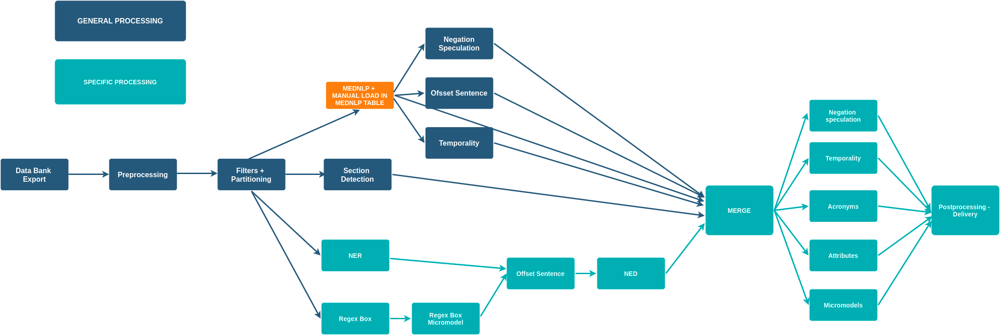
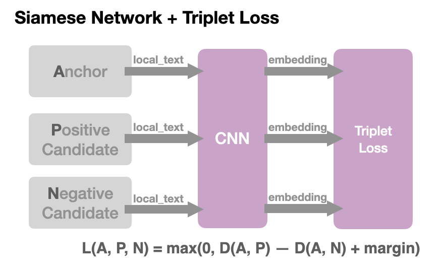
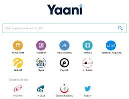

This site is under-works... more to come!
Projects
Automatic creation of Web sites at scale
Web Scrapping + RAG systems for automatic creation of Web sites.

NLP pipeline to understand EHR
Natural Language Processing to understand Electronic Health Records. CNN model training from scratch.

Acronym Disambiguation
Siamese Networks and Triplet Loss to create embeddings for acronym disambiguation

Web Search Engine - Turkey
Learning-to-Rank, Feature selection, Spell correction, Named Entity Detection.